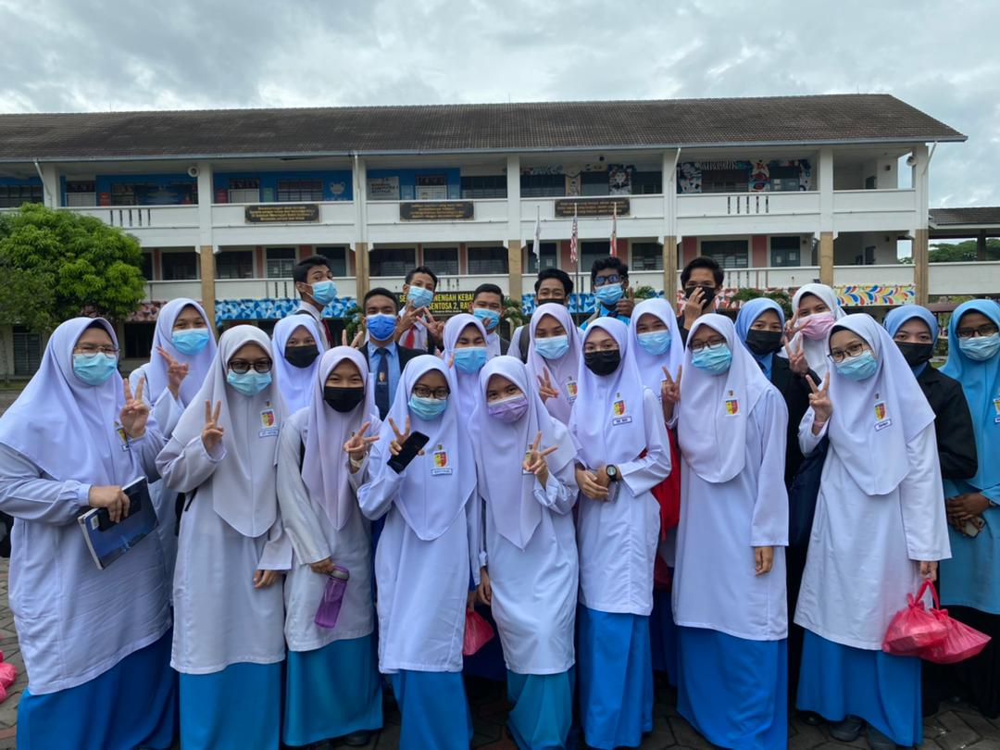
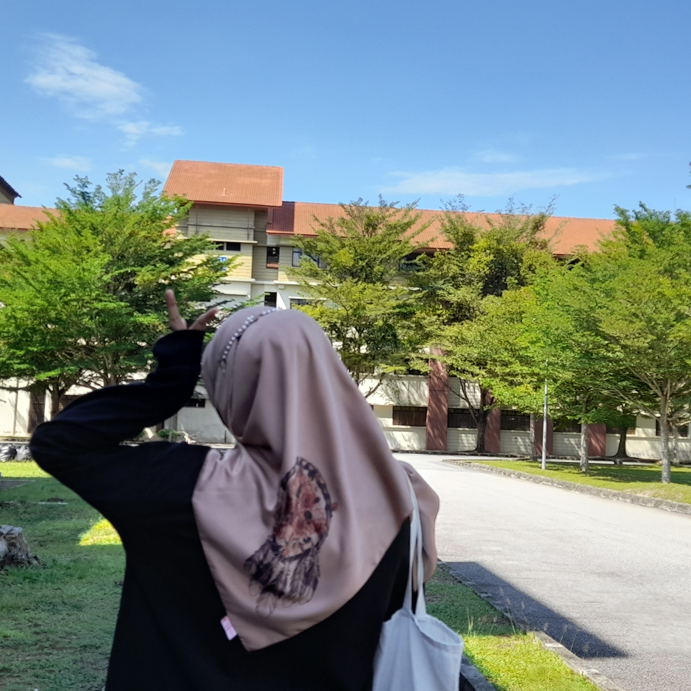
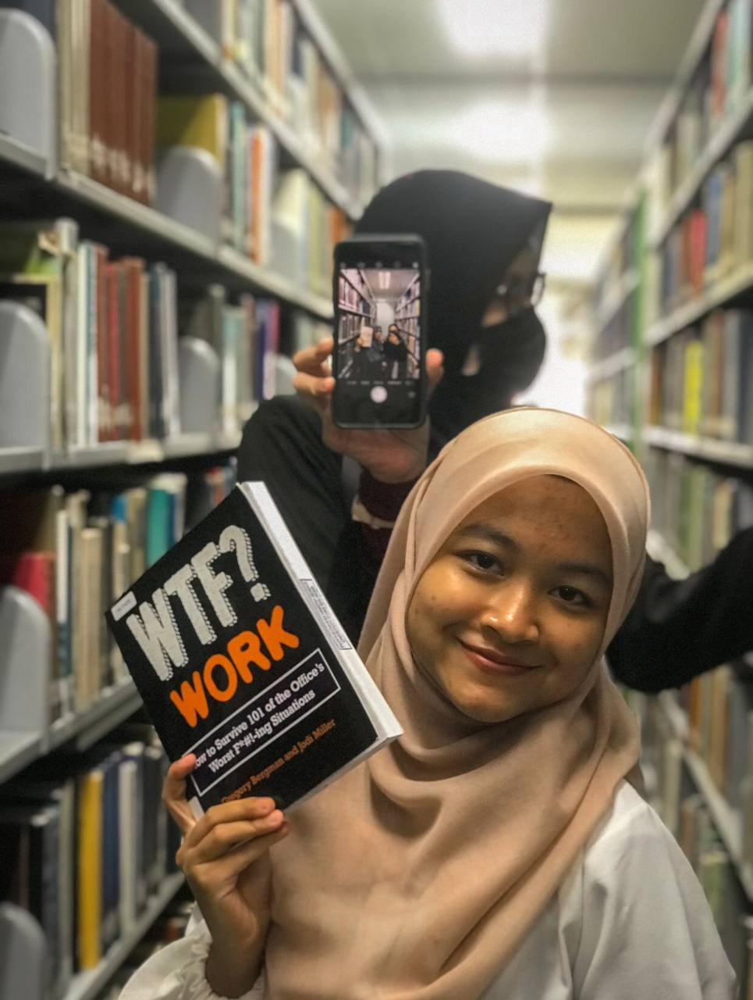
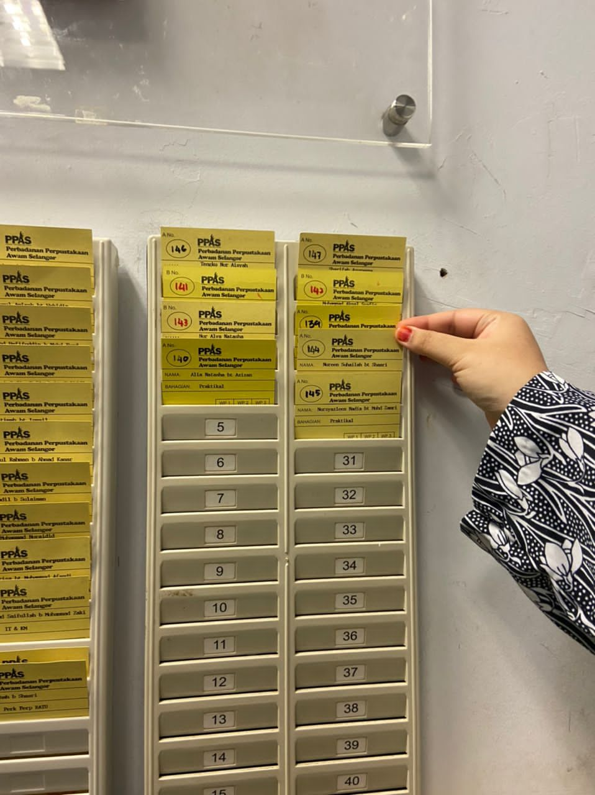
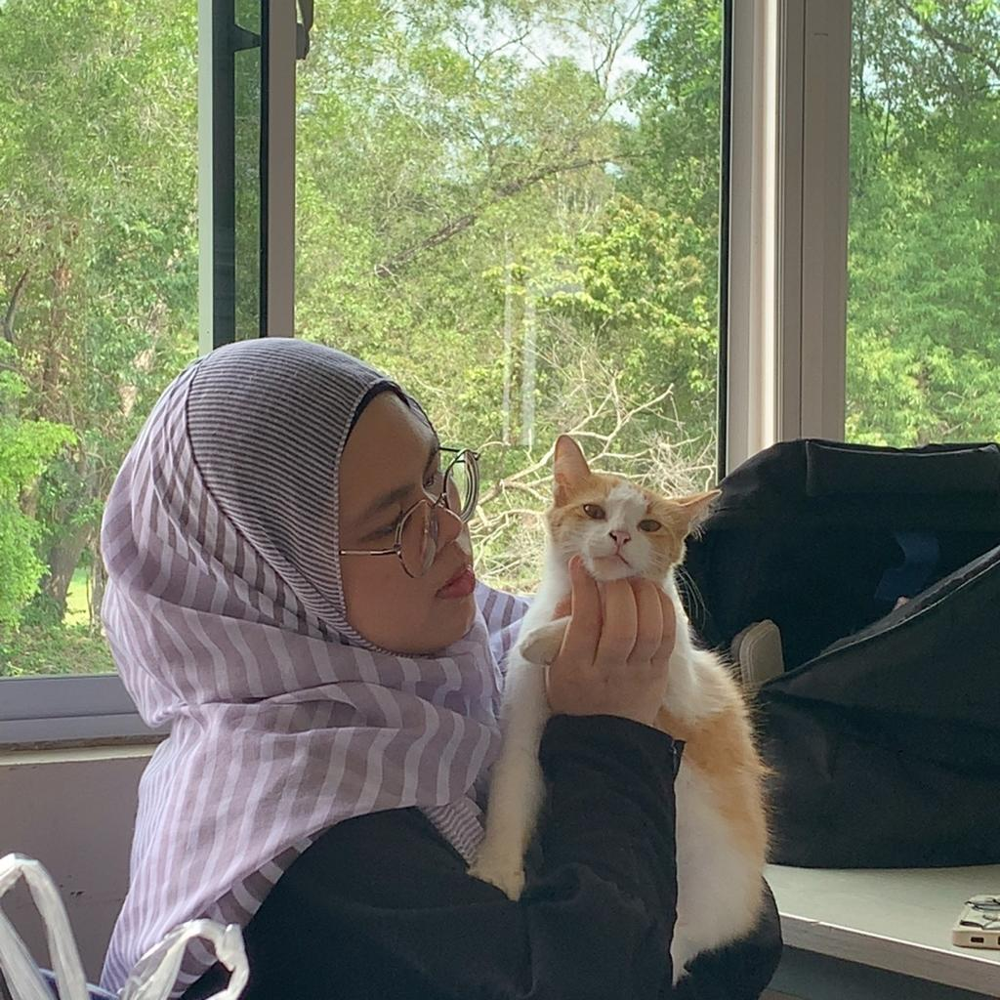

This was the last day of my SPM examination. We had Economy paper on the last day. We are the batch spm'promax', maybe because of Covid? I don't know. I didn't remember actually why our batch had this nickname. All I know is our batch are the last batch of kbsm. My SPM result....5A 3B so close yet so far.

First time living in college or dormitory with strangers(hshs) But I'd cope it very well! Living in the college is one of the best thing as a student!! Although at first we were complaining about the distance. but hey, its one of the way to lose weight. (try to be positive huhu)

We went to USM, Pulau Pinang for our case study for subject. Thank you to our cutest friend Nina, who drove us safely. We had so much fun there. Plus it make us more 'insaf' with our university as their university are sooooo big like they has their own town, and its legit hot over there.

During semester holiday, my batch are required to go for industrial training for 6 weeks. And I had choose Perbadanan Perpustakaan Awam Selangor(PPAS) as my industrial training location. It was the best experience ever! All the staffs are so friendly. And I do feel like a part of their family. I learn a lot of things in PPAS, make friends, socialize with people and visitors, how to cope with different kind of situation, pressure and more.
